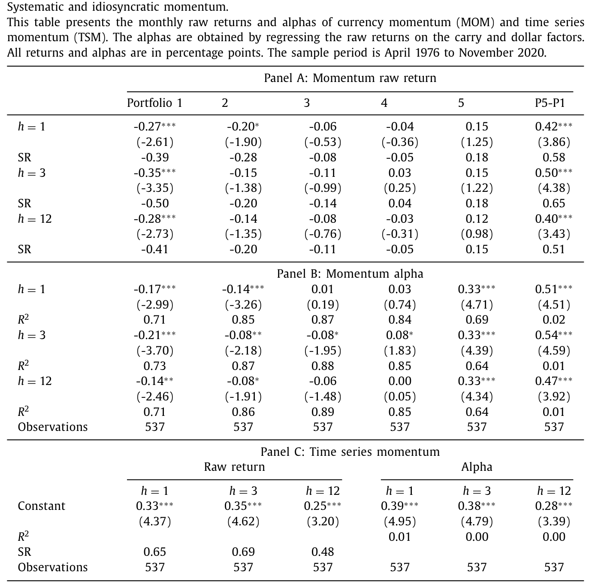
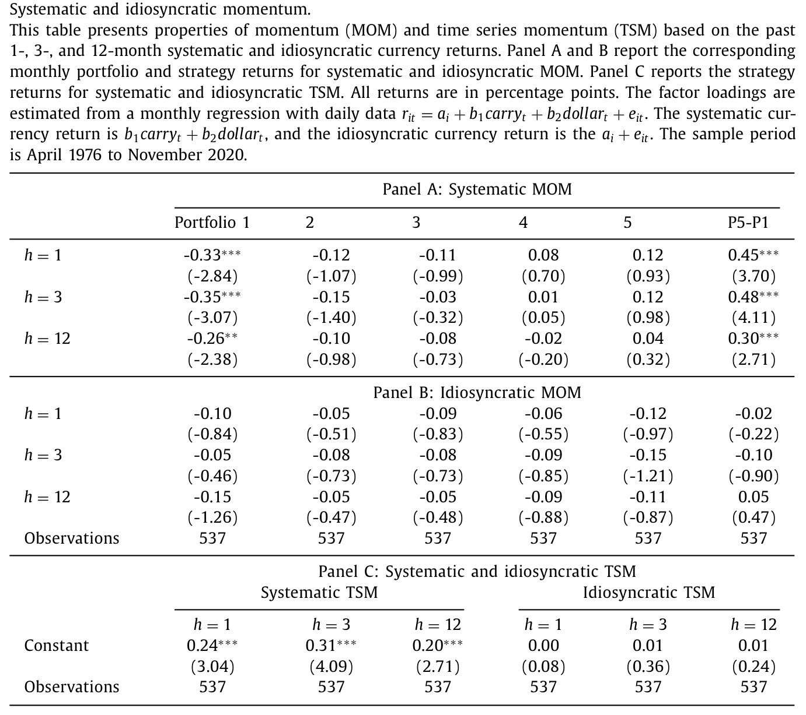
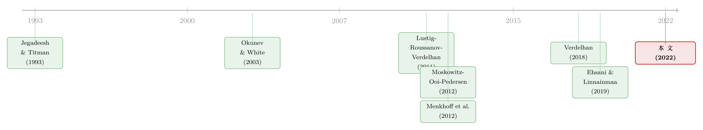

货币动量的真身：它不过是因子在「重复自己」
本文读的是 Zhang (2022, Journal of Financial Economics)：货币市场里的横截面动量与时序动量，长期以来被认为「无法被 carry 与 dollar 两个因子解释」——本文却证明，它们其实正源自这两个因子自身的动量。把货币收益拆成「系统性」与「特质性」两半，动量只活在系统性的那一半；而所谓「因子动量」（追着因子自己的涨跌做多做空）不仅跑赢、还能反过来吃掉横截面动量与时序动量的全部 alpha。
1 一个被「低相关」掩盖的谜
先抛一个让人别扭的事实。
货币里有动量。过去的赢家货币，未来还会继续跑赢输家货币（Burnside et al., 2011b；Menkhoff et al., 2012b）；单一货币自己的过去收益，也正向地预测它自己的未来收益——这就是时序动量 (time series momentum, TSM)（Moskowitz et al., 2012）。这两件事都直接违背了弱式有效市场，也让「资产价格由风险驱动」的标准叙事很难自圆其说。
货币市场又有两个公认的「定价支柱」：套息因子 (carry factor) 和美元因子 (dollar factor)。Lustig et al. (2011) 与 Verdelhan (2018) 证明，这两个因子几乎解释了货币横截面里的绝大部分变异。
于是一个自然的问题摆在面前：既然 carry 和 dollar 能解释货币收益的大头，那它们能不能解释货币动量？
教科书式的答案是——不能。把动量组合的收益对 carry、dollar 回归，alpha 大得离谱、且高度显著。本文 Table 1 就把这桩「无法解释」摆得明明白白：3 个月形成期的横截面动量 (MOM) 多空价差是 50 bps、t 值 4.38；对两因子回归后，alpha 不降反升到 54 bps（t = 4.59），而 R² = 0.01——两个因子对多空价差的解释力，约等于零。1 个月、12 个月动量的 alpha 分别是 51 bps 和 47 bps，同样几乎不被吸收。时序动量也一样：1/3/12 个月的原始收益是 33/35/25 bps，Sharpe 比率 0.65/0.69/0.48，对两因子回归后 alpha 反而升到 39/38/28 bps。

Table 1
这就是货币动量长期以来的「身份」：一个游离于因子之外、低相关、无法被风险解释的独立异象。
但本文要讲的，恰恰是这个「身份」是一场误会。
2 真正关键的一步：把收益拆成两半
接着，作者做了一件看似平平无奇、却撬动了整篇文章的事：把每一只货币的收益，拆成「系统性」和「特质性」两部分（这一思路来自 Verdelhan, 2018）。
这里有个工程上的细节值得点出：beta 是用日度数据、逐月估计的。这样做有两个好处——允许 beta 随时间漂移（货币因子载荷本就不稳定），也避免了用未来信息估计 beta 的前视偏差 (look-ahead bias)。
拆完之后，作者把同一套动量构造，分别套在「过去的系统性收益」和「过去的特质性收益」上，做两个版本的动量。
于是反转出现了。
按过去系统性收益排序的动量，价差是显著的：3 个月版本 48 bps（t = 4.11），1 个月、12 个月版本 45 bps 和 30 bps，全部在 1% 水平显著，量级几乎和原始动量一模一样。而按过去特质性收益排序的动量，价差是 −2 / −10 / 5 bps，在任何常规水平上都不显著，组合收益从 portfolio 1 到 5 甚至不是单调的。
时序动量是同一个故事的另一面：系统性 TSM 的常数项是 0.24 / 0.31 / 0.20（全部显著），特质性 TSM 则是 0.00 / 0.01 / 0.01——干净利落的零。

Table 2
一句话：货币动量的全部「燃料」，都藏在系统性收益里；特质性收益里几乎没有动量。 而系统性收益，按定义就是 carry 和 dollar 这两个因子组合出来的东西。
那个「低相关、无法被解释」的印象，到底错在哪？错在它是无条件 (unconditional) 的视角。动量与因子的无条件相关性确实很低；但一旦你按条件去看，它们其实是同一回事。
3 因子也会「记仇」：条件相关与因子动量
为什么系统性收益里会有动量？直觉其实很朴素。
设想 carry 因子刚刚连涨了三个月。高息货币因此涨得多，在按过去收益排序时，它们更容易被分进动量的赢家组合（portfolio 5）；低息货币则掉进输家组合（portfolio 1）。于是这一期的动量组合，事实上就在做多 carry 因子。反过来，carry 连跌三个月之后，动量组合就在做空 carry。dollar 因子同理。
这意味着：动量和因子之间的相关性，会随「因子过去的表现」翻转符号。数据强烈支持这一点——动量收益与 carry 收益的相关性，在 carry 过去三个月为正时是 0.36，为负时是 −0.62；与 dollar 因子对应的相关性是 0.53 和 −0.43。无条件下两者看似不相关，是因为这一正一负被平均「抵消」掉了。
但这只是把问题往前推了一步。真正的源头变成了：carry 和 dollar 因子自己，有没有动量？
答案是有，而且很强。回归显示，过去的因子收益强烈预测未来的因子收益：过去 3 个月平均 carry 收益每高 1%，下个月 carry 因子平均高 0.2%；dollar 对应的系数是 0.21%。在「货币收益出了名地难以预测」这一背景下（Meese and Rogoff, 1983；Rossi, 2013），这个结果相当扎眼。更要紧的是，按过去因子收益的符号分组后会发现：carry 和 dollar 只在「正收益之后」赚到显著为正的收益，在「亏损之后」则收益为负或不显著。而且这种可预测性，没法被既有的货币预测变量（平均远期贴现、工业生产增长、产出缺口等）总结掉。
把这个可预测性直接做成策略，就是本文的主角——因子动量 (factor momentum)：当某个因子过去收益为正就做多它、为负就做空它。3 个月形成期下，单做 carry 的 Sharpe 高达 0.85、单做 dollar 是 0.55，都高于无条件的 carry 和 dollar。把两个因子等权合起来，1/3/12 个月形成期的 Sharpe 分别是 0.84 / 0.94 / 0.69——全面高于横截面动量和时序动量。
到这里，故事已经反转完成：所谓的货币动量，本质上只是在「被动地」复述 carry 和 dollar 因子的自相关。
4 谁能解释谁：一场单向的「吞并」
但最漂亮的一击，是接下来的「对账」。
作者把因子动量与（横截面）动量、时序动量两两放进同一个回归里互相解释。结果是单向的：因子动量能张成 (span) 横截面动量和时序动量——加入因子动量后，动量的 alpha 在任何常规水平上都不再显著，而且因子动量能逐一货币地解释掉绝大部分时序动量；反过来，动量与时序动量却张不成因子动量，后者的 alpha 依旧又大又显著。
这就把三者的关系彻底理顺了：横截面动量和时序动量，都只是因子动量的「派生品」，它们不过是在总结 carry 与 dollar 因子里的自相关而已。一个干净的、统一的因——这正是全文反复要锤进读者脑子里的那一个核心。
（货币里这种「把收益拆给系统性因子」的拆解思路，和把套息收益重新归位的研究气味相投，可参见《被「藏起来」的收益：当一个三十年回报为零的策略，其实从不为零》。）
5 因子动量从何而来：限制套利 + 时变风险溢价
那么，更深一层的问题是：因子动量本身又从哪儿来？广义上无非两条路——错误定价 (mispricing)，或时变的风险溢价 (time-varying risk premium)。本文两边都给了证据。
限制套利 (limits to arbitrage) 的那一面。 carry 动量与货币特征相关：它在「越不可交易」的货币里越强——新兴市场、资本账户开放度越低、波动越大的货币。这与「套利越难、错误定价越能存活」的逻辑一致（Shleifer and Vishny, 1997）。有意思的是，dollar 动量却几乎与货币特征无关，说明两个因子的动量未必同源。
时变风险溢价的那一面。 作者写下一个含两个全局冲击 (global shocks) 的模型：一个全局冲击驱动 carry 排序的横截面，另一个驱动「平均外国货币收益」（即 dollar），再叠加国别特定冲击。carry 与 dollar 的因子溢价，分别捕捉这两个全局冲击对应的预期收益溢价。关键的机制在于：货币因子对全局冲击的风险暴露，会随已实现的波动率冲击而变化——而波动率本身是持续的，于是风险溢价就以「自相关」的形式时变起来。校准结果显示，这个模型能在量上复制出数据里看到的因子动量。
换句话说，因子动量未必全是「市场犯傻」，它也可以是风险价格随波动率呼吸的自然结果。（这种「贴现率/风险溢价随状态变化」才是资产定价中心议题的视角，可参见《贴现率：资产定价的中心议题》。）
6 文献脉络
把这条线索往回拉，能看清本文站在哪儿。
动量的故事，从股票市场的 Jegadeesh and Titman (1993) 开始——买赢家、卖输家。Okunev and White (2003) 把它搬进货币市场，Menkhoff et al. (2012b) 系统记录了货币动量；Moskowitz et al. (2012) 则在多个市场里发现了时序动量。与此同时，货币定价的另一条线在搭支柱：Lustig et al. (2011) 立起 carry 与 dollar 两因子，Verdelhan (2018) 进一步量化了双边汇率里「系统性变异」的占比，并提供了把收益拆成系统性/特质性的工具——这正是本文的手术刀。
一个长期的尴尬是：货币因子解释不了货币动量（Burnside et al., 2011b；Menkhoff et al., 2012b），这给「因子视角」出了难题。直到 Ehsani and Linnainmaa (2019) 在股票里发现「因子也有动量」，并提出因子动量能解释股票动量；Gupta and Kelly (2019) 进一步证明因子动量无处不在；Kelly et al. (2021) 用时变因子收益统一理解动量与反转。本文正是把这条「因子动量」的钥匙，第一次配进货币市场的锁孔——并多走了一步：不仅指出货币动量源自因子动量，还给出一个产生因子动量的时变风险溢价模型。

7 评论与延伸（Q&A + 研究方向）
(a) 几个可能的疑问
Q：既然无条件回归里 carry/dollar 解释不了动量，凭什么说动量「源自」它们？
关键在「无条件」三个字。动量与 carry 的相关性会随因子过去表现翻号（正收益后
0.36、亏损后−0.62），无条件下被平均抵消，所以看着不相关。但把收益拆成系统性/特质性后，动量只在系统性那半边存在（系统性 MOM 价差48 bps、特质性−10 bps不显著），说明燃料确实来自因子。
Q：这和股票里的「因子动量」（Ehsani-Linnainmaa）是一回事吗？
思想同源、市场不同。股票里因子动量解释的是股票动量；本文把它搬到货币，且同时拿下了横截面动量与时序动量两个目标，还补了一个时变风险溢价的结构模型。货币动量与股票动量在性质上也有差异——按过去 1 个月排序，股票表现为反转、货币却是强动量，且货币动量几乎不崩盘（Daniel and Moskowitz, 2016 记录的股票动量崩盘在货币里基本看不到）。
Q：beta 用日度数据逐月估，会不会把动量「偷渡」进系统性收益里？
这是合理的担心。作者的辩护是：逐月、用当期日度数据估 beta，避免了前视偏差；并报告了 3 至 12 个月不等的估计窗都得到类似结果（Internet Appendix）。不过 beta 估计误差是否系统性地偏向「制造」系统性动量，仍值得更挑剔地检验。
Q：因子动量到底是错误定价还是风险？本文站哪边？
两边都不独占。限制套利那面有证据（carry 动量在新兴市场、低开放度、高波动货币里更强）；时变风险溢价那面也有——模型让因子对全局冲击的暴露随已实现波动率变化，自然产生自相关式的风险溢价，且校准能在量上复制数据。作者的立场是「二者共同部分地解释」，而非二选一。
Q：dollar 动量与 carry 动量为什么表现不同？
carry 动量与货币特征强相关、偏向限制套利的解释；dollar 动量却几乎与货币特征无关。这提示两个因子的动量未必同源，也是为什么单一「行为偏误」或单一「风险」都难以一锅端。
Q：这是不是只是「波动率缩放」制造出来的假动量？
作者特意按 Kim et al. (2016) 与 Huang et al. (2020) 的批评，对时序动量做了等权处理、并在附录里研究了波动率缩放版本，结论类似。也就是说，核心结果不依赖波动率缩放这一已知的「伪可预测性」来源。
(b) 几个可能的研究问题与提案
1）把同一把手术刀挪到公司债动量上。 【经济故事】公司债里也有动量，但只在非投资级里显著（Jostova et al., 2013），投资级几乎没有。若信用债收益能拆成「系统性（信用、期限、流动性因子）+ 特质」，债券动量会不会也只活在系统性那半边、并源自信用因子的自相关？【可行性】中。需要 TRACE 成交价构造月度债券收益、用日度/周度数据估因子 beta（流动性稀疏是难点），识别上可复刻本文的「系统性/特质性动量」对照。
2）外资持有人结构与因子动量的强弱。 【经济故事】本文说 carry 动量在「越不可交易」的货币里越强（限制套利）。一个自然延伸：在公司债市场，外资持有比例高/低的券，是否对应不同的因子自相关与动量强度？外资进出可能既是套利力量、也是需求冲击。【可行性】中。需把 eMAXX/TIC 类持有人数据与债券因子收益匹配，识别上可用外资准入或指数纳入事件做准自然实验。
3）已实现波动率作为因子动量的「开关」。 【经济故事】模型核心是「因子对全局冲击的暴露随已实现波动率变化」。可直接检验：在高已实现波动率状态下，因子动量是否更强/更弱？把波动率状态作为交互项放进因子动量的预测回归。【可行性】高。数据现成（汇率日度算已实现波动率、因子收益自构造），纯时间序列回归即可，doable。
4）因子动量的可交易性与净收益。
【经济故事】Sharpe 0.84–0.94 很诱人，但货币因子动量要频繁在因子间换仓，交易成本可能吃掉很大一块。【可行性】高。需要 bid-ask 报价（BBI/Reuters 已有 spot/forward），做净额化后的净收益与换手分析，结论是否仍稳健是个干净的实证问题。
8 我的判断
这篇文章最漂亮的地方，是用一个极朴素的动作（把收益拆成系统性与特质性）化解了一桩困扰货币文献多年的「悖论」：动量与因子的低无条件相关，被误读成了「相互独立」，而真相是「条件相关、符号随因子过去表现翻转」。「因子动量能张成动量、动量张不成因子动量」这个单向结论，把横截面动量、时序动量、因子三者的关系一次性理顺，干净得让人信服。再加上一个能在量上复制因子动量的时变风险溢价模型，文章在「记录现象」之上多走了一步去解释机制——这是它高出同类纯实证工作的地方。
对识别，我有两点保留。其一，全部结论都建立在「用日度数据逐月估 beta」这一步上；尽管作者做了多窗口稳健性，但 beta 估计误差是否会系统性地把动量「灌进」系统性收益，仍是一个需要更对抗性检验的关口——理想情况下，我想看到一个用完全外生的 beta（例如基于货币基本面而非过去收益拟合）来重做分解的版本。其二，限制套利与时变风险溢价被并列为两个解释，但二者在数据里的相对权重并没有被定量地切开；carry 与 dollar 动量表现迥异，恰恰提示这两条机制可能各管一段，值得一个能把二者份额拆开的设计。
后续我最想看到的，是把这把「因子动量」的钥匙系统性地配到信用市场和公司债上，并诚实地算一笔净收益的账——一个 Sharpe 接近 1 的策略，在扣掉换手与价差之后还剩多少，才是它能不能从「学术发现」走向「真实机会」的分水岭。
参考文献
- Asness, C.S., Moskowitz, T.J., Pedersen, L.H. (2013). Value and momentum everywhere. Journal of Finance 68(3), 929–985.
- Burnside, C., Eichenbaum, M., Rebelo, S. (2011). Carry trade and momentum in currency markets. Annual Review of Financial Economics 3(1), 511–535.
- Daniel, K., Moskowitz, T.J. (2016). Momentum crashes. Journal of Financial Economics 122(2), 221–247.
- Ehsani, S., Linnainmaa, J.T. (2019). Factor Momentum and the Momentum Factor. NBER Working Paper.
- Gupta, T., Kelly, B. (2019). Factor momentum everywhere. Journal of Portfolio Management 45(3), 13–36.
- Huang, D., Li, J., Wang, L., Zhou, G. (2020). Time series momentum: is it there? Journal of Financial Economics 135(3), 774–794.
- Jegadeesh, N., Titman, S. (1993). Returns to buying winners and selling losers: implications for stock market efficiency. Journal of Finance 48(1), 65–91.
- Jostova, G., Nikolova, S., Philipov, A., Stahel, C.W. (2013). Momentum in corporate bond returns. Review of Financial Studies 26(7), 1649–1693.
- Kelly, B.T., Moskowitz, T.J., Pruitt, S. (2021). Understanding momentum and reversals. Journal of Financial Economics, forthcoming.
- Kim, A.Y., Tse, Y., Wald, J.K. (2016). Time series momentum and volatility scaling. Journal of Financial Markets 30, 103–124.
- Lustig, H., Roussanov, N., Verdelhan, A. (2011). Common risk factors in currency markets. Review of Financial Studies 24(11), 3731–3777.
- Meese, R.A., Rogoff, K. (1983). Empirical exchange rate models of the seventies: do they fit out of sample? Journal of International Economics 14(1–2), 3–24.
- Menkhoff, L., Sarno, L., Schmeling, M., Schrimpf, A. (2012). Currency momentum strategies. Journal of Financial Economics 106(3), 660–684.
- Moskowitz, T.J., Ooi, Y.H., Pedersen, L.H. (2012). Time series momentum. Journal of Financial Economics 104(2), 228–250.
- Okunev, J., White, D. (2003). Do momentum-based strategies still work in foreign currency markets? Journal of Financial and Quantitative Analysis 38(2), 425–447.
- Rossi, B. (2013). Exchange rate predictability. Journal of Economic Literature 51(4), 1063–1119.
- Shleifer, A., Vishny, R.W. (1997). The limits of arbitrage. Journal of Finance 52(1), 35–55.
- Verdelhan, A. (2018). The share of systematic variation in bilateral exchange rates. Journal of Finance 73(1), 375–418.
- Zhang, S. (2022). Dissecting currency momentum. Journal of Financial Economics 144(1), 154–173.